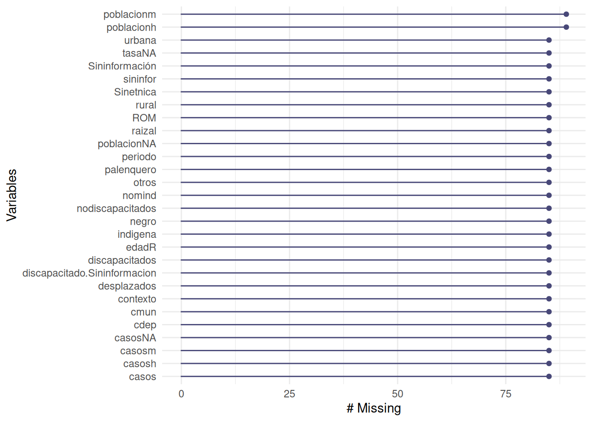
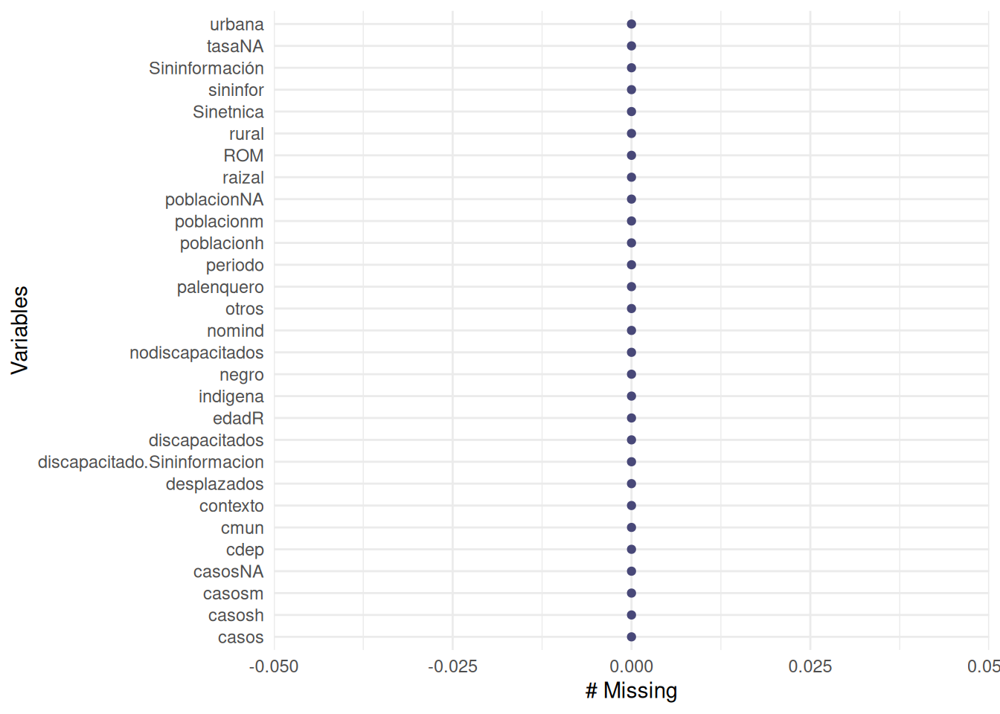

Con el fin de poner en practica lo visto en la sesión, se propone replicar las siguientes instrucciones en RStudio, ya se localmente (R-RStudio instalados en PC) o en la plataforma RStudio Cloud.
Note que en la ventana console sale el código relacionado con la importación de la base. Abra un script (documento en blanco para escribir los códigos). + verde ubicado en la esquina superior izquierda : R Script.
Indicadores_Infancia_adolescencia_juventud_2021 <- read_excel(“data/Indicadores_Infancia_adolescencia_juventud_2021.xlsx”, + sheet = “Ind. Violencia Sexual”, range = “B9:AJ2548”)
Elimine > deje el codigo en una sola línea sin el mas y cambie el nombre de la base por violencia_sex_2021, esto facilitará a futuro el llamado de la base.
base222 <-read_excel("data/Indicadores_Infancia_adolescencia_juventud_2021.xlsx", sheet = "Ind. Violencia Sexual", range = "B9:AJ2548")
library(readxl)
violencia_sex_2021 <-read_excel("data/Indicadores_Infancia_adolescencia_juventud_2021.xlsx",
sheet = "Ind. Violencia Sexual",
range = "B9:AJ2548")Listo, ya tenemos el primer paso que es la importación de la base
View(violencia_sex_2021)View(violencia_sex_2021)
str(violencia_sex_2021)tibble [2,539 × 35] (S3: tbl_df/tbl/data.frame)
$ Código Departamento : num [1:2539] 91 91 91 91 91 91 91 91 5 5 ...
$ Código Municipio : num [1:2539] 91263 91405 91001 91001 91001 ...
$ Código indicador : num [1:2539] 81 81 81 81 81 121 81 81 81 81 ...
$ Nombre del indicador : chr [1:2539] "Tasa de exámenes médico legales por presunto delito sexual contra niños, niñas y adolescentes" "Tasa de exámenes médico legales por presunto delito sexual contra niños, niñas y adolescentes" "Tasa de exámenes médico legales por presunto delito sexual contra niños, niñas y adolescentes" "Tasa de exámenes médico legales por presunto delito sexual contra niños, niñas y adolescentes" ...
$ Contexto del hecho : chr [1:2539] "PRESUNTO DELITO SEXUAL" "PRESUNTO DELITO SEXUAL" "PRESUNTO DELITO SEXUAL" "PRESUNTO DELITO SEXUAL" ...
$ Periodo del Indicador : num [1:2539] 2021 2021 2021 2021 2021 ...
$ Rangos de edad o edades simples : chr [1:2539] "(06 a 11)" "(12 a 17)" "(01 a 05)" "(06 a 11)" ...
$ Numerador (casos) : num [1:2539] 1 3 13 21 30 4 1 1 3 5 ...
$ Denominador (Población) : num [1:2539] 331 540 5711 6788 6395 ...
$ Resultado (Tasa) : num [1:2539] 302 556 228 309 469 ...
$ Hombre Numerador (casos) : num [1:2539] 0 0 4 5 3 1 0 0 1 0 ...
$ Hombre Denominador (Población) : num [1:2539] 174 295 2926 3447 3266 ...
$ Hombre Resultado (Tasa) : num [1:2539] 0 0 136.7 145.1 91.9 ...
$ Mujer Numerador (casos) : num [1:2539] 1 3 9 16 27 3 1 1 2 5 ...
$ Mujer Denominador (Población) : num [1:2539] 157 245 2785 3341 3129 ...
$ Mujer Resultado (Tasa) : num [1:2539] 637 1224 323 479 863 ...
$ Sin Datos Numerador (casos) : num [1:2539] 0 0 0 0 0 0 0 0 0 0 ...
$ Sin Datos Denominador (Población): num [1:2539] 0 0 0 0 0 0 0 0 0 0 ...
$ Sin Datos Resultado (Tasa) : num [1:2539] 0 0 0 0 0 0 0 0 0 0 ...
$ Rural : num [1:2539] 1 0 1 1 3 0 0 1 2 3 ...
$ Urbana : num [1:2539] 0 3 12 20 27 4 1 0 1 2 ...
$ Sin información...22 : num [1:2539] 0 0 0 0 0 0 0 0 0 0 ...
$ Desplazados (as) : num [1:2539] 0 0 0 0 0 0 0 0 0 0 ...
$ Otros : num [1:2539] 1 3 13 21 30 4 1 1 3 5 ...
$ Persona con discapacidad : num [1:2539] 0 0 0 1 2 1 0 0 0 0 ...
$ No discapacitado : num [1:2539] 1 3 13 20 28 3 1 1 3 5 ...
$ Discapacitado
Sin información : num [1:2539] 0 0 0 0 0 0 0 0 0 0 ...
$ Indígena : num [1:2539] 1 2 6 7 16 2 1 1 0 0 ...
$ Negro/Afrodescendiente : num [1:2539] 0 0 0 0 0 0 0 0 0 0 ...
$ Palenquero : num [1:2539] 0 0 0 0 0 0 0 0 0 0 ...
$ Raizal : num [1:2539] 0 0 0 0 0 0 0 0 0 0 ...
$ ROM (Gitano) : num [1:2539] 0 0 0 0 0 0 0 0 0 0 ...
$ Sin pertenencia étnica : num [1:2539] 0 1 7 14 14 2 0 0 1 3 ...
$ Sin información...34 : num [1:2539] 0 0 0 0 0 0 0 0 2 2 ...
$ TOTAL : num [1:2539] 1 3 13 21 30 4 1 1 3 5 ...variables = names(violencia_sex_2021)
variables [1] "Código Departamento" "Código Municipio"
[3] "Código indicador" "Nombre del indicador"
[5] "Contexto del hecho" "Periodo del Indicador"
[7] "Rangos de edad o edades simples" "Numerador (casos)"
[9] "Denominador (Población)" "Resultado (Tasa)"
[11] "Hombre Numerador (casos)" "Hombre Denominador (Población)"
[13] "Hombre Resultado (Tasa)" "Mujer Numerador (casos)"
[15] "Mujer Denominador (Población)" "Mujer Resultado (Tasa)"
[17] "Sin Datos Numerador (casos)" "Sin Datos Denominador (Población)"
[19] "Sin Datos Resultado (Tasa)" "Rural"
[21] "Urbana" "Sin información...22"
[23] "Desplazados (as)" "Otros"
[25] "Persona con discapacidad" "No discapacitado"
[27] "Discapacitado\nSin información" "Indígena"
[29] "Negro/Afrodescendiente" "Palenquero"
[31] "Raizal" "ROM (Gitano)"
[33] "Sin pertenencia étnica" "Sin información...34"
[35] "TOTAL" names(violencia_sex_2021)=c("cdep","cmun","indicador", "nomind","contexto",
"periodo","edadR", "casos", "poblacion","tasa",
"casosh", "poblacionh", "tasah", "casosm",
"poblacionm", "tasam", "casosNA", "poblacionNA",
"tasaNA", "rural", "urbana", "sininfor",
"desplazados", "otros", "discapacitados",
"nodiscapacitados", "discapacitado.Sininformacion",
"indigena", "negro", "palenquero", "raizal", "ROM",
"Sinetnica", "Sininformación", "TOTAL", "tipo") # cheque de variables
names(violencia_sex_2021) [1] "cdep" "cmun"
[3] "indicador" "nomind"
[5] "contexto" "periodo"
[7] "edadR" "casos"
[9] "poblacion" "tasa"
[11] "casosh" "poblacionh"
[13] "tasah" "casosm"
[15] "poblacionm" "tasam"
[17] "casosNA" "poblacionNA"
[19] "tasaNA" "rural"
[21] "urbana" "sininfor"
[23] "desplazados" "otros"
[25] "discapacitados" "nodiscapacitados"
[27] "discapacitado.Sininformacion" "indigena"
[29] "negro" "palenquero"
[31] "raizal" "ROM"
[33] "Sinetnica" "Sininformación"
[35] "TOTAL" # vsex21 <- violencia_sex_2021[, c(1,2,4,5,6,7,8,11,12,14,15, 17,18, 19,20,21,22,23,24,25,26,27,28,29,30,31,32,33,34)]
vsex21 <- violencia_sex_2021[, c(1,2,4:8,11,12,14,15, 17:34)]
str(vsex21)tibble [2,539 × 29] (S3: tbl_df/tbl/data.frame)
$ cdep : num [1:2539] 91 91 91 91 91 91 91 91 5 5 ...
$ cmun : num [1:2539] 91263 91405 91001 91001 91001 ...
$ nomind : chr [1:2539] "Tasa de exámenes médico legales por presunto delito sexual contra niños, niñas y adolescentes" "Tasa de exámenes médico legales por presunto delito sexual contra niños, niñas y adolescentes" "Tasa de exámenes médico legales por presunto delito sexual contra niños, niñas y adolescentes" "Tasa de exámenes médico legales por presunto delito sexual contra niños, niñas y adolescentes" ...
$ contexto : chr [1:2539] "PRESUNTO DELITO SEXUAL" "PRESUNTO DELITO SEXUAL" "PRESUNTO DELITO SEXUAL" "PRESUNTO DELITO SEXUAL" ...
$ periodo : num [1:2539] 2021 2021 2021 2021 2021 ...
$ edadR : chr [1:2539] "(06 a 11)" "(12 a 17)" "(01 a 05)" "(06 a 11)" ...
$ casos : num [1:2539] 1 3 13 21 30 4 1 1 3 5 ...
$ casosh : num [1:2539] 0 0 4 5 3 1 0 0 1 0 ...
$ poblacionh : num [1:2539] 174 295 2926 3447 3266 ...
$ casosm : num [1:2539] 1 3 9 16 27 3 1 1 2 5 ...
$ poblacionm : num [1:2539] 157 245 2785 3341 3129 ...
$ casosNA : num [1:2539] 0 0 0 0 0 0 0 0 0 0 ...
$ poblacionNA : num [1:2539] 0 0 0 0 0 0 0 0 0 0 ...
$ tasaNA : num [1:2539] 0 0 0 0 0 0 0 0 0 0 ...
$ rural : num [1:2539] 1 0 1 1 3 0 0 1 2 3 ...
$ urbana : num [1:2539] 0 3 12 20 27 4 1 0 1 2 ...
$ sininfor : num [1:2539] 0 0 0 0 0 0 0 0 0 0 ...
$ desplazados : num [1:2539] 0 0 0 0 0 0 0 0 0 0 ...
$ otros : num [1:2539] 1 3 13 21 30 4 1 1 3 5 ...
$ discapacitados : num [1:2539] 0 0 0 1 2 1 0 0 0 0 ...
$ nodiscapacitados : num [1:2539] 1 3 13 20 28 3 1 1 3 5 ...
$ discapacitado.Sininformacion: num [1:2539] 0 0 0 0 0 0 0 0 0 0 ...
$ indigena : num [1:2539] 1 2 6 7 16 2 1 1 0 0 ...
$ negro : num [1:2539] 0 0 0 0 0 0 0 0 0 0 ...
$ palenquero : num [1:2539] 0 0 0 0 0 0 0 0 0 0 ...
$ raizal : num [1:2539] 0 0 0 0 0 0 0 0 0 0 ...
$ ROM : num [1:2539] 0 0 0 0 0 0 0 0 0 0 ...
$ Sinetnica : num [1:2539] 0 1 7 14 14 2 0 0 1 3 ...
$ Sininformación : num [1:2539] 0 0 0 0 0 0 0 0 2 2 ...faltantes <- colSums(is.na(vsex21))
faltantes <- as.data.frame(faltantes)
faltantes faltantes
cdep 85
cmun 85
nomind 85
contexto 85
periodo 85
edadR 85
casos 85
casosh 85
poblacionh 89
casosm 85
poblacionm 89
casosNA 85
poblacionNA 85
tasaNA 85
rural 85
urbana 85
sininfor 85
desplazados 85
otros 85
discapacitados 85
nodiscapacitados 85
discapacitado.Sininformacion 85
indigena 85
negro 85
palenquero 85
raizal 85
ROM 85
Sinetnica 85
Sininformación 85# install.packages("naniar")
library(naniar)
gg_miss_var(vsex21) # gráfico de datos faltantes
summary(vsex21) cdep cmun nomind contexto
Min. : 5.00 Min. : 999 Length:2539 Length:2539
1st Qu.: 15.00 1st Qu.:15682 Class :character Class :character
Median : 25.00 Median :25718 Mode :character Mode :character
Mean : 39.81 Mean :38596
3rd Qu.: 68.00 3rd Qu.:68242
Max. :999.00 Max. :99001
NA's :85 NA's :85
periodo edadR casos casosh
Min. :2021 Length:2539 Min. : 1.000 Min. : 0.000
1st Qu.:2021 Class :character 1st Qu.: 1.000 1st Qu.: 0.000
Median :2021 Mode :character Median : 2.000 Median : 0.000
Mean :2021 Mean : 8.585 Mean : 1.103
3rd Qu.:2021 3rd Qu.: 5.000 3rd Qu.: 1.000
Max. :2021 Max. :1985.000 Max. :183.000
NA's :85 NA's :85 NA's :85
poblacionh casosm poblacionm casosNA
Min. : 39.0 Min. : 0.000 Min. : 47 Min. :0
1st Qu.: 567.2 1st Qu.: 1.000 1st Qu.: 529 1st Qu.:0
Median : 1179.5 Median : 2.000 Median : 1124 Median :0
Mean : 4145.3 Mean : 7.482 Mean : 4041 Mean :0
3rd Qu.: 2632.5 3rd Qu.: 5.000 3rd Qu.: 2520 3rd Qu.:0
Max. :766011.0 Max. :1802.000 Max. :768040 Max. :0
NA's :89 NA's :85 NA's :89 NA's :85
poblacionNA tasaNA rural urbana
Min. :0 Min. :0 Min. : 0.000 Min. : 0.000
1st Qu.:0 1st Qu.:0 1st Qu.: 0.000 1st Qu.: 1.000
Median :0 Median :0 Median : 1.000 Median : 2.000
Mean :0 Mean :0 Mean : 1.244 Mean : 7.269
3rd Qu.:0 3rd Qu.:0 3rd Qu.: 2.000 3rd Qu.: 4.000
Max. :0 Max. :0 Max. :44.000 Max. :1959.000
NA's :85 NA's :85 NA's :85 NA's :85
sininfor desplazados otros discapacitados
Min. : 0.00000 Min. : 0.0000 Min. : 0.000 Min. : 0.00000
1st Qu.: 0.00000 1st Qu.: 0.0000 1st Qu.: 1.000 1st Qu.: 0.00000
Median : 0.00000 Median : 0.0000 Median : 2.000 Median : 0.00000
Mean : 0.07213 Mean : 0.1434 Mean : 8.441 Mean : 0.09372
3rd Qu.: 0.00000 3rd Qu.: 0.0000 3rd Qu.: 5.000 3rd Qu.: 0.00000
Max. :39.00000 Max. :30.0000 Max. :1981.000 Max. :11.00000
NA's :85 NA's :85 NA's :85 NA's :85
nodiscapacitados discapacitado.Sininformacion indigena
Min. : 0.000 Min. :0 Min. : 0.0000
1st Qu.: 1.000 1st Qu.:0 1st Qu.: 0.0000
Median : 2.000 Median :0 Median : 0.0000
Mean : 8.491 Mean :0 Mean : 0.1858
3rd Qu.: 5.000 3rd Qu.:0 3rd Qu.: 0.0000
Max. :1979.000 Max. :0 Max. :17.0000
NA's :85 NA's :85 NA's :85
negro palenquero raizal ROM
Min. : 0.0000 Min. :0.00000 Min. :0.00000 Min. :0.00000
1st Qu.: 0.0000 1st Qu.:0.00000 1st Qu.:0.00000 1st Qu.:0.00000
Median : 0.0000 Median :0.00000 Median :0.00000 Median :0.00000
Mean : 0.2225 Mean :0.00204 Mean :0.02078 Mean :0.00122
3rd Qu.: 0.0000 3rd Qu.:0.00000 3rd Qu.:0.00000 3rd Qu.:0.00000
Max. :36.0000 Max. :2.00000 Max. :9.00000 Max. :1.00000
NA's :85 NA's :85 NA's :85 NA's :85
Sinetnica Sininformación
Min. : 0.000 Min. : 0.0000
1st Qu.: 1.000 1st Qu.: 0.0000
Median : 2.000 Median : 0.0000
Mean : 7.417 Mean : 0.7359
3rd Qu.: 5.000 3rd Qu.: 1.0000
Max. :1831.000 Max. :145.0000
NA's :85 NA's :85 # install.packages("naniar")
library(naniar)
gg_miss_var(vsex21) # grafico de datos faltantesvsex21 <- vsex21[1:2454,]# install.packages("naniar")
library(naniar)
vsex21SINA <- na.omit(vsex21) # elimina todos los valores con NA
gg_miss_var(vsex21SINA) # gráfico de datos faltantes
write.csv(vsex21, "data/violencia_sex_2021.csv")library(readxl)
violencia_sex_2021 <-read_excel("data/Indicadores_Infancia_adolescencia_juventud_2021.xlsx",
sheet = "Ind. Violencia Sexual",
range = "B9:AJ2548")
variables = names(violencia_sex_2021)
names(violencia_sex_2021)=c("cdep","cmun","indicador", "nomind","contexto",
"periodo", "edadR", "casos", "poblacion","tasa",
"casosh", "poblacionh", "tasah", "casosm",
"poblacionm", "tasam", "casosNA", "poblacionNA",
"tasaNA", "rural", "urbana", "sininfor",
"desplazados", "otros", "discapacitados",
"nodiscapacitados", "discapacitado.Sininformacion",
"indigena", "negro", "palenquero", "raizal","ROM",
"Sinetnica", "Sininformación", "TOTAL", "tipo")
vsex21 <- violencia_sex_2021[, c(1,2,4:8,11,12,14,15, 17:34)]
str(vsex21)
faltantes <- colSums(is.na(vsex21))
faltantes <- as.data.frame(faltantes)
faltantes
# install.packages("naniar")
library(naniar)
gg_miss_var(vsex21) # gráfico de datos faltantes
# install.packages("naniar")
library(naniar)
gg_miss_var(vsex21) # grafico de datos faltantes
vsex21 <- vsex21[1:2454,]
# install.packages("naniar")
library(naniar)
vsex21SINA <- na.omit(vsex21) # elimina todos los valores con NA
gg_miss_var(vsex21SINA) # gráfico de datos faltantes
write.csv(vsex21, "data/violencia_sex_2021.csv")Repita el anterior procedimiento para las bases correspondientes a los periodos 2022 y 2020 y guarde las bases con los nombres :
data/violencia_sex_2022.csv
data/violencia_sex_2020.csv
En la próxima sesión serán unidos
En caso de utilizar RStudio Cloud, clone el repositorio github seminarioML con el siguiente enlace
https://github.com/dgonxalex80/seminarioML.git